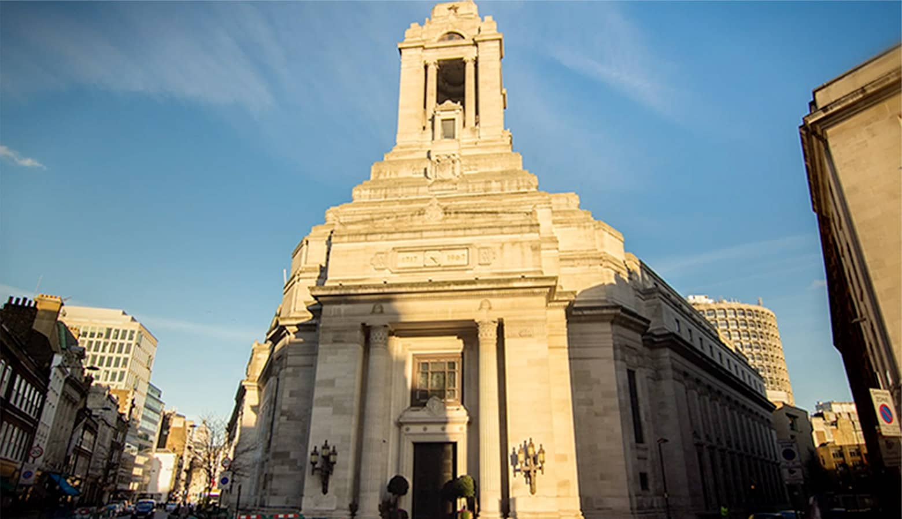

The Northern Polytechnic Lodge, No. 6039
The Northern Polytechnic Lodge is a Freemason's Lodge, part of the Metropolitan Grand Lodge of London under the constitution of the United Grand Lodge of England.
The Northern Polytechnic Lodge, No. 6039
The Northern Polytechnic Lodge is a Freemason's Lodge, part of the Metropolitan Grand Lodge of London under the constitution of the United Grand Lodge of England.
MEETINGS
The Northern Polytechnic Lodge meets 4 times a year at Freemason’s Hall, 60 Great Queen Street. London. WC2B 5AZ.
Meeting dates:
4th Saturday October (Installation)
1st Saturday December
1st Saturday February
4th Saturday April (elections)
Historical background of The Northern Polytechnic Lodge
The Northern Polytechnic Lodge was founded in London in 1945, by lecturers, students and staff, of the North London Polytechnic for further and higher education. Many of our founders had recently returned from duties in the Second World War and sought to constitute a Masonic Lodge that harboured fellowship and harmony in the post-war era.
Over the years the North London Polytechnic evolved into a constituent part of what is now known as the London Metropolitan University. We still have a couple of members who have a loose connection to the North London Polytechnic, but in truth, this important connection has been diminished.
In recent years the Lodge has re-established its connection with its heritage, by building links with the London’s wider student population. The Lodge provides an annual student bursary to the Sir John Cass Foundation, for students attending the Cass Faculty of Art, Architecture and Design (Part of the London Metropolitan University).
The Lodge is also an active member of the UGLE Universities Scheme, supporting Masons who aspire to develop their Masonic careers alongside their studies, or affording opportunities to London’s students who seek the additional light of Freemasonry.
What is Freemasonry?
Freemasonry is one of the world’s oldest and largest non-religious, non-political, fraternal and charitable organisations. Its roots lie in the traditions and ceremonies of the medieval stonemasons who built our cathedrals and castles. Some rituals are still celebrated today.
The Values of Freemasonry
INTEGRITY
We say what we mean and we keep our promises
KINDNESS
Although our families come first, we believe in playing a key role in our communities and give time and money to charitable ventures
HONESTY
We pride ourselves on openness, about what being a Freemason means for us
FAIRNESS
We treat everyone as equal - we listen to others, explore any differences and look for common ground
TOLERANCE
We respect the opinions of others and behave with understanding towards them